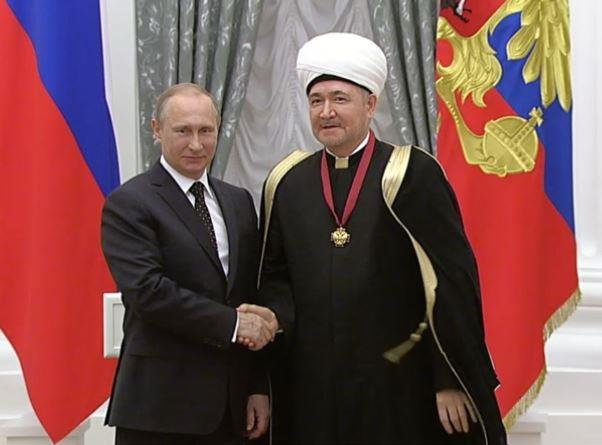

La présence de l’Islam en Russie peut paraitre comme un facteur de crise en Russie ces dernières années. Le président russe ainsi que les différentes instances politiques du pays ont été particulièrement impliquées pour traiter de ce sujet.
En effet, arrivé en 1999 en tant que Premier Ministre, Vladimir Poutine a la confiance de Boris Eltsine et de son entourage. Il hérite de deux conflits internes : la Tchétchénie (1996) et le Daghestan qui fait face à une rébellion islamiste. Deux républiques majoritairement musulmanes étaient en proie à un désordre de nature religieuse.
En tant que premier ministre puis Président de la Fédération russe, il doit faire face à la réislamisation des autres républiques comme le Tatarstan et à leurs tendances centrifuges. Voulant éviter une explosion de la fédération russe, il a essayé de construire un Islam russifié afin de faire apparaitre un sentiment d’appartenance et de s’imperméabiliser aux influences des pays du Golfe.
Très récemment, les plus farouches opposants à l’intégration de la Crimée à la fédération de Russie étaient des islamistes Tatars de Crimée. En réponse le pouvoir a utilisé les mêmes méthodes.
Certains affirment qu’il s’agit de la politique de « la main tendue mais ferme ». Cette main tendue qui pourrait finir dans la figure de ceux qui la refuseraient.
Si les deux tiers de la population russe toutes ethnies confondues sont orthodoxes, l’Islam tient la deuxième place. L’Islam en Russie est avant tout la religion de nombreuses minorités ethniques de Russie malgré des conversions récentes de Slaves. Il est inexacte de parler d’un Islam mais plutôt d’une mosaïque. « Chaque région russe interprétera le terme d’islam traditionnel différemment. Le Tatarstan, la Bachkirie et le Caucase ont chacun leurs coutumes ». a constaté l’expert de religions Igor Zagarine, de l’Académie présidentielle russe de l’économie nationale et de l’administration publique. La plupart des musulmans vivent au Nord-Caucase, ainsi que près de la Volga et dans l’Oural.
Mais cette implantation musulmane historique s’additionne avec une autre beaucoup plus récente. En effet depuis la chute de l’URSS, les populations musulmanes turcophones migrent pour des raisons économiques vers les grandes villes russes. Cette immigration étrangère serait de l’ordre de 3 à 4 millions.
Bien que la plupart des sources donnent une proportion de 10 % soit 14 millions, il n’est pas possible d’évaluer précisément le nombre de musulmans pratiquants au sein des « musulmans ethniques » et des adeptes des autres religions. Les différentes organisations d’état ne disposent pas de telles données. Les chiffres des immigrés ouzbeks ou kirghizes restent flous et fausses les statistiques.
Néanmoins, le taux de natalité des peuples musulmans de Russie reste plus élevé que celui du peuple russe et des peuples chrétiens en général. Malgré la guerre, depuis l’indépendance de la Russie, le nombre de Tchétchènes a augmenté de 50 %, le nombre de Lesghiens au Daghestan de 60 %, et même de 90 % pour les Ingouches. Ces chiffres officiels sont toutefois remis en cause par l’opposition politique russe.
Face au décroissement démographique de la Russie (148 millions d’habitants en 1991 contre 143 millions en 2001, mais 148 millions en 2018), certains nationalistes russes orthodoxes manifestent une forte crainte d’un accroissement majeur du poids des peuples musulmans au sein d’une communauté de peuples plus petite qu’auparavant. À leurs dires, la Russie serait islamisée à la fin du XXIe siècle, le nombre de musulmans passant de 15 % à 50 %. À contrario de ces craintes, le taux de natalité de la plus nombreuse minorité musulmane, les Tatares, est nettement sous le seuil de renouvellement de la population. De plus l’immigration ukrainienne et géorgienne, ces dernières années ont consolidé la domination orthodoxe. Cette dernière a été renforcée par 2 millions de conversions de musulmans ethniques vers l’Orthodoxie. (Recensement de 2010).
Sur les bords de la Volga, on dit qu’il est souvent plus facile de bâtir des mosquées de pierre que de réveiller la foi dans l’âme des croyants. On dit aussi que « la vodka dissout le Coran ». Rafik Mukhametshovich, le recteur de l’université islamique de Kazan, le concède. « La moitié des Tatars musulmans ne fréquentent jamais la mosquée, boivent de l’alcool et mangent du porc ». Les Musulmans russes sont vus comme de piètres pratiquants.
La politique du pouvoir russe depuis 20 ans a été très simple en interne : éviter une nouvelle guerre civile avec une lecture religieuse. Celle-ci pourrait amener à l’explosion de la fédération de Russie et à se mettre à dos de manière radicale le monde musulman dans son ensemble.
Pour cela le pouvoir a distingué les problèmes liés à ce sujet pour les combattre un part un.
En ce qui concerne la rébellion islamiste dans le Caucase, l’État russe a fait usage de la force. Sur un point répressif, les organismes d’état ont traqué les islamistes et combattu les rebelles des républiques musulmanes en Tchétchénie et au Daghestan. Le cout militaire et policier a été très fort et l’État reste vigilant. Les forces russes se sont vues renforcés par des anciens rebelles amnistiés en échange de leurs loyautés. Pour acheter, la paix l’État a fait un certain nombre de concessions en acceptant l’islamisation de la Tchétchénie. Et la Tchétchénie est décrit comme une république islamique vassalisée à la Fédération.
Contrairement aux craintes de certains, la guerre de Tchétchénie n’a pas provoqué de solidarité majeure des musulmans du monde entier contre la Russie. Ce qui s’était passé avec l’URSS avec l’intervention en Afghanistan.
Bien au contraire, certains États musulmans par crainte de l’islamisme encourageaient la Russie à faire régner l’ordre par la force. Au niveau interne, des intellectuels tatares ou bachkirs musulmans critiquaient le fait qu’à peine un million de Tchétchènes placent leur intérêt national au-dessus du bien de la communauté musulmane.
De la sorte, ils empoisonnent les relations entre la Russie et le monde musulman, qui sont importantes pour beaucoup de musulmans. En outre, les Tchétchènes ont obtenu l’aide des chrétiens de Géorgie car anti russes, ce qui leur a valu de nouveaux reproches de Tatares. En effet, les Ingouches, voisins des Tchétchènes, ont soutenu surtout le nationalisme géorgien contre les Ossètes (Perses mais chrétiens), car les Géorgiens étaient eux aussi des Caucasiens.
Sur un plan politique de la politique locale, Poutine tout au long de ses mandats a gardé la même ligne : accorder une certaine autonomie aux ethnies musulmanes en échange de leurs loyautés. Si l’État central achète la loyauté des élites politiques et économiques des minorités musulmanes, il demande aux autorités religieuses de rester à leurs places. Aussi hétéroclite que soit l’islam en Russie, l’État est favorable à ses manifestations qui ne déploient leur activité que dans le domaine culturel et social, sans s’attaquer à la politique.
Des villes aux villages, les arrestations préventives se sont multipliées. Les rares organisations de type salafistes ont été démantelées et leurs membres font profil bas. Cette méthode a été faite très rapidement en Crimée afin que la minorité des Tatars de Crimée ne rallie pas les islamistes internationaux.
D’un autre coté la politique de la main tendue a été effectuée. C’est pourquoi de manière officielle l’État a multiplié les actes de sympathies envers les musulmans en rénovant ou construisant des gigantesques mosquées. Des rencontres avec les dirigeants religieux sont fréquentes. Lors de rassemblements militaires, les troupes venant de républiques musulmanes ont le droit de faire la prière en public.
Néanmoins l’alliance marche dans les deux sens, car ces républiques musulmanes ont vu l’implantation d’églises orthodoxes et des conversions de musulmans qui en découlent. Certains peuples à l’origine entièrement musulmans se sont vu christianisés peu à peu. Certains convertis orthodoxes venant de l’Islam ont vu leurs carrières politiques décoller : on peut citer l’ancien ministre de l’intérieur Rashid Nurgalyev, le président du Daghestan Vladimir Vasilyev et Vyacheslav Bitarov le président d’origine tchétchène d’Ossétie Nord.
Le 23 septembre 2015, veille de l’Aïd el-Kébir (fête du Sacrifice), Vladimir Poutine a inauguré avec faste la nouvelle grande mosquée de Moscou. Le président russe a pour sa part cité le Coran avec ce verset : « Efforcez-vous de rivaliser entre vous dans l’accomplissement du bien », et a rendu hommage aux leaders des républiques musulmanes de la Fédération de Russie qui « opposent une résistance courageuse et héroïque » à « ce qu’on appelle l’État islamique ». Ce dernier, selon le président russe, ne fait que « nuire à une grande religion »et s’est « bâti sur le mensonge ».
L’État a aussi engagé une refonte totale des institutions musulmanes en Russie. En effet afin d’allier l’Islam tatar, le caucasien et celui des immigrés d’Asie centrale, Moscou en est devenu le centre de gravité institutionnel. Les convertis musulmans russes slaves sont surreprésentés dans ces institutions.
Même si la religion orthodoxe domine la vie politique et sociale, il est clair que la Russie est obligée de par sa géographie physique et humaine de composer avec l’Islam et les musulmans. Ce constat est d’autant plus évident que la Fédération russe entend gagner une place internationale au Moyen Orient et de plus en plus en Afrique musulmane.
Néanmoins la Sainte Russie reste la 3eme Rome et le danger qu’elle devienne la deuxième Mecque est largement éloigné.
Partager cette page